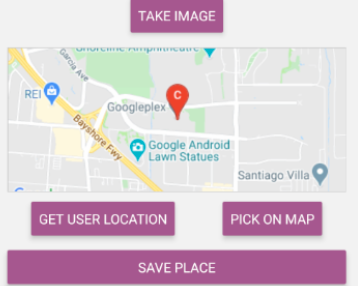

ABOUT

HISTORY
After graduating from the University of Chicago in 2016 with a bachelor’s degree in pure mathematics, I spent the next two years traveling across America working as a chef in elite kitchens. A few highlights include Detroit’s Grey Ghost, Chicago’s A10, High Five Ramen and Blackbird, Portland’s Lang Baan and New York’s Spotted Pig, Little Park, Cafe Boulud and Daniel. While working at Restaurant Daniel I suffered a physical injury and decided to pursue a new career. Software engineering offered the perfect blend of rigor and creativity I loved and I haven’t looked back since.
SOFTWARE ENGINEERING
With software engineering I discovered the familiar systematic approach to thinking about problems I’d formerly encountered as a mathematician could be applied creatively towards applications and scalable good. During my time as an engineer I’ve had the opportunity to work across the stack, from the frontend to the backend to devops and analytics. I’m particularly interested in understanding interrelations between systems, having built complex distributed systems in the past. It’s also important to me to understand finer details, as I believe engineers ought to be intimately familiar with the tools they are using.
Philosophy
I’ve been blessed to have had several friends and mentors who have supported, motivated and inspired me. I’m especially drawn to two sayings that were made to me by two personally inspirational individuals in my life. The first being that good engineers deliver products with a certain “style and taste”. The other, in a totally separate non-engineering context, was made by someone nearing the end of his life who claimed to be proud to have walked through it with “dignity and grace”. I’ve always believed that the most important part of my career is how it moves and touches those around me. To that end, I strive to work with style, taste, dignity and grace.
FUN FACTS
When I'm not coding you can find me reveling in the joys of rock climbing, picking through produce at the local farmer’s market or running through Central Park. I am a lover of the outdoors, live music and my library card.
Projects
"This Is Water" is a full-stack single-page web application inspired by the story-sharing platform "Medium". ThisIsWater
is built using Rails/PostgreSQL on the backend and React.js/Redux on the frontend.

"Pixel Paint" is a random sampling algorithm visualization tool. PixelPaint takes sampling algorithms and uses them over
visualizations to create beautiful diagrams.

"Profound Sound" is a music visualization app that allows users to watch, listen and dance along to visual representations
of This Must Be The Place by The Talking Heads.

"This Must Be The Place" is a mobile app for Android and iOS that detects and allows you to save your location with your camera.

Skills
- Python3
- JavaScript
- Ruby on Rails
- React
- React Native
 Redux
Redux SQL
SQL- HTML
- CSS
- AWS
- Android
- iOS
- Docker
- Git
- Linux
- R
- Squarespace
- Wordpress
- Agile
Contact